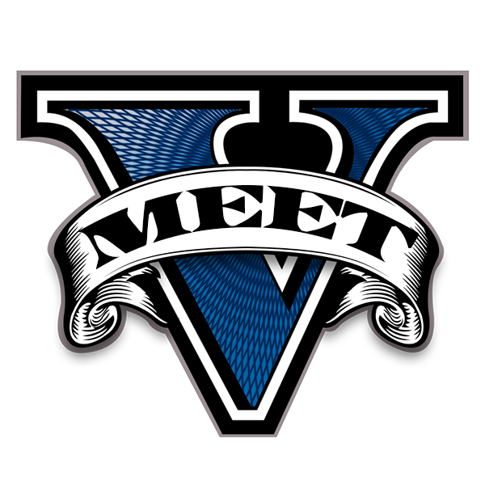

I'm currently working on some upgrades to my site, to make it a general space for my projects. I understand you might be looking for the map, so there will be an easy way to get there. If you want to go there directly you can always bookmark the link directly.